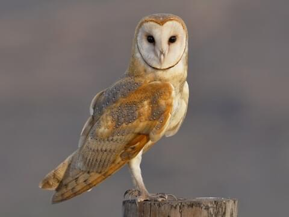
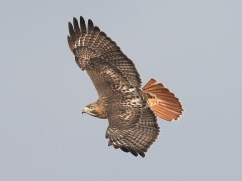
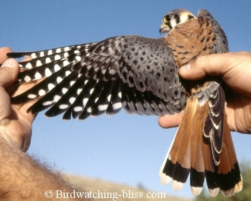

| Great Horned Owl | With its long, earlike tufts, intimidating yellow-eyed stare,
and deep hooting voice, the Great Horned Owl is the quintessential owl of storybooks.
This powerful predator can take down birds and mammals even larger than itself, but it also
dines on daintier fare such as tiny scorpions, mice, and frogs. It’s one of the most common
owls in North America, equally at home in deserts, wetlands, forests, grasslands, backyards,
cities, and almost any other semi-open habitat between the Arctic and the tropics. |
 |
| Barn Owl | Ghostly pale and normally strictly nocturnal, Barn Owls are silent predators of
the night world. Lanky, with a whitish face, chest, and belly, and buffy upperparts, this owl roosts
in hidden, quiet places during the day. By night, they hunt on buoyant wingbeats in open fields and
meadows. You can find them by listening for their eerie, raspy calls, quite unlike the hoots of other
owls. Despite a worldwide distribution, Barn Owls are declining in parts of their range due to habitat
loss. |
 |
| Red Tail Hawk | This is probably the most common hawk in North America. If you’ve got sharp
eyes you’ll see several individuals on almost any long car ride, anywhere. Red-tailed Hawks soar above
open fields, slowly turning circles on their broad, rounded wings. Other times you’ll see them atop telephone
poles, eyes fixed on the ground to catch the movements of a vole or a rabbit, or simply waiting out
cold weather before climbing a thermal updraft into the sky. |
 |
| American Kestrel | North America’s littlest falcon, the American Kestrel packs a predator’s fierce intensity
into its small body. It's one of the most colorful of all raptors: the male’s slate-blue head and wings
contrast elegantly with his rusty-red back and tail; the female has the same warm reddish on her wings,
back, and tail. Hunting for insects and other small prey in open territory, kestrels perch on wires or
poles, or hover facing into the wind, flapping and adjusting their long tails to stay in place. Kestrels
are declining in parts of their range; you can help them by putting up nest boxes. |
 |